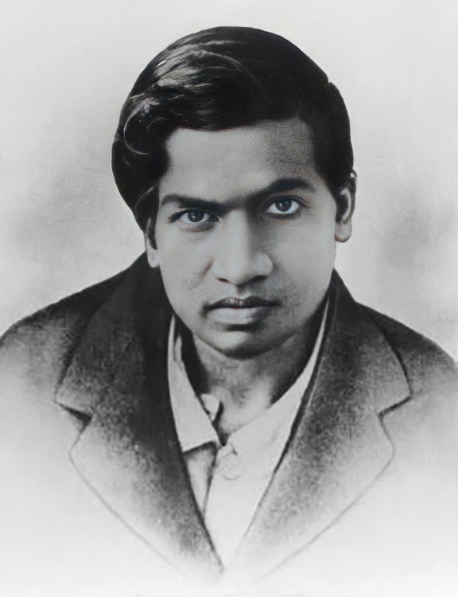

Srinivasa Ramanujan
He is a Indian mathematician

Srinivasa Ramanujan (1887-1920) was an Indian mathematician known for his extraordinary contributions to mathematical analysis, number theory, and continued fractions. He made numerous groundbreaking discoveries despite having no formal education in mathematics beyond college-level courses.
Few lines about Srinivasa Ramanujan
- Srinivasa Ramanujan was an Indian mathematician who made numerous groundbreaking contributions to mathematical analysis, number theory, and continued fractions.
- He was born on 22 December 1887 Erode, India, Tamil Nadu state.
- Ramanujan was born in his grandmother's house in Erode, a small village about 400 km southwest of Madras (now Chennai).
- His father’s name was K.Srinivasa Iyengar and his mother’s name was Komalatammal.
- On 14 July 1909, Ramanujan married Janaki (Janakiammal) 21 March 1899 – 13 April 1994, a girl his mother had selected for him a year earlier and who was ten years old when they married.
- They had 3 children: Rangachari and 2 other children.
- In 1903 he briefly attended the University of Madras. In 1914 he went to England to study at Trinity College, Cambridge, with British mathematician G.H. Hardy.
- At age 15 Srinivasa Ramanujan obtained a mathematics book containing thousands of theorems, which he verified and from which he developed his own ideas.
- At last in 1912, he got the posting of “accounting clerk,” at the Madras Port Trust. He worked, when, Sir Francis Spring was the chairman of the Trust. In the Port Trust also, he used to scribble in piece of papers, only mathematical theorems, series and so on. It was one Ramaswamy Aiyer, who recommended to the Accountant General Office as a clerk.
- As students used to write on the slates with chalk [called as Balappam], he could transfer only some of his discovered equations from the slate to piece of papers.
- In 1912–1913, he sent samples of his theorems to three academics at the University of Cambridge. G. H. Hardy, recognizing the brilliance of his work, invited Ramanujan to visit and work with him at Cambridge. He became a Fellow of the Royal Society and a Fellow of Trinity College, Cambridge.
-
In 1914, G.H. Hardy,arranged a scholarship for him to Trinity College.
In 1915, Ramanujan published his paper “Higher composite numbers”.
In 1916, PhD was awarded, just for formality, as knowledge was stupendous.
In 1917, he was diagnosed with Tuberculosis.
On 6 December 1917, he was elected to the London Mathematical Society. - He returned to Madras on March 13th 1919.
- He died on April 24th 1920, Kumbakonam, Tamil Nadu state, India
- Summary:
Ramanujan made substantial contributions to the analytical theory of numbers and worked on elliptic functions, continued fractions, and infinite series.
“An equation for me has no meaning, unless it expresses a thought of God.”
-- Srinivasa Ramanuja